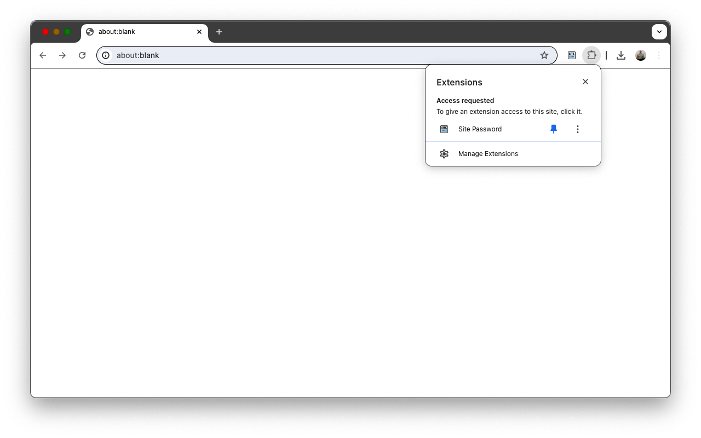
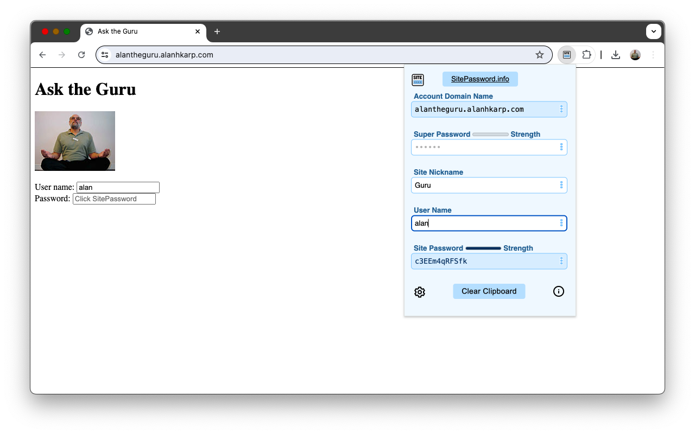
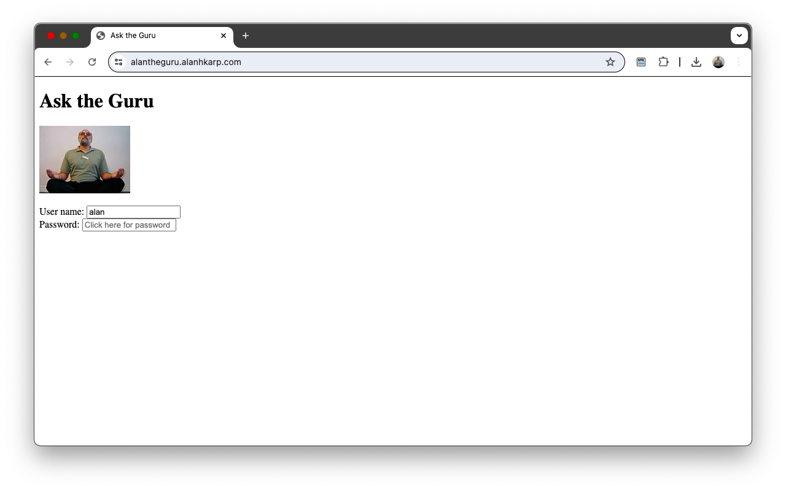

Getting Started with SitePassword
Your browser's password autofill feature interferes with SitePassword. Turn it off. You can find instructions by searching for "stop password autofill" in your browser.
Click on the puzzle piece, and pin the SitePassword icon to the toolbar.
Next, navigate to a page with a login form, such as alantheguru.alanhkarp.com

Click on the SitePassword icon, and fill in the form.
Mouse over to the login form.
Click on the password field, and you're ready to login.

When you return to this page on any machine you synchronize bookmarks with, you only need to click on the password field.
Click on the
 icon on the SitePassword popup window to learn more.
icon on the SitePassword popup window to learn more.